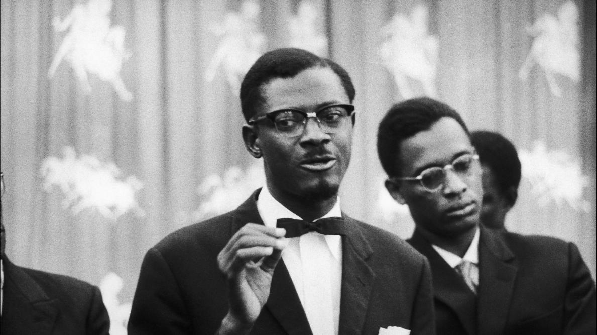

Patrice Emery LUMUMBA
the man who set the congolese free

Patrice Emery Lumumba est considéré en République démocratique du Congo comme le premier « héros national » du pays post-indépendance.
Here's a time line of Lumumba
"Sans dignité, il n’y a pas de liberté, sans justice, il n’y a pas de dignité, et sans indépendance, il n’y a pas d’hommes libres."- 1925 - Né le 2 juillet 1925 dans le village d’Onalua, province de la colonie du Congo-Belge, Patrice Emery Lumumba, de son vrai nom Elias Okit’Asombo, grandit dans une famille modeste. Fils d’un père paysan chrétien, il recevra une éducation de base dans des écoles missionnaires chrétiennes. Elève doué, il est distingué et rejoint les rangs des « évolués », la petite population d’indigènes que le pouvoir belge consent à laisser s’élever dans la société coloniale.
- 1958 - Il est alors encore marqué par le paternalisme dont le Congo belge est empreint et se reconnait dans les idées du parti libéral belge. Mais sa prise de conscience est rapide : en 1958, il professe des opinions clairement anticolonialistes et il fonde à Léopoldville (aujourd’hui Kinshasa) le Mouvement national congolais, un parti nationaliste, unitaire et radical. Quelques semaines plus tard, Il assiste à la Conférence des peuples africains, où il croise notamment Frantz Fanon, alors rallié au FLN algérien, et le Ghanéen Kwamé Nkrumah – des rencontres qui marqueront un tournant essentiel dans sa pensée politique
- 1960 - Désormais résolument favorable à l’indépendance, il sera arrêté par les autorités belges au début de 1960. Son arrestation, et le front uni des leaders congolais face au pouvoir de Bruxelles, précipiteront la marche vers l’indépendance, fixée au 30 juin. Libéré, il remporte avec son parti les premières élections libres du pays et est nommé Premier ministre. Le jour de l’indépendance, il répond avec force au roi Baudoin de Belgique qui venait de saluer l’œuvre colonisatrice de son ancêtre, Léopold II
-
1961 - Le 17 janvier 1961, il y a 60 ans, Patrice Lumumba, leader de l’indépendance congolaise et premier Premier ministre congolais élu démocratiquement est assassiné. Une mort tragique qui est le fruit d’une déstabilisation orchestrée par plusieurs acteurs : les autorités belges, congolaises et états-uniennes via la CIA.
Son corps sera découpé puis dissout dans de l’acide sulfurique. Dans les années 2000, un policier belge avouera avoir participé à l’opération et avoir conservé une dent du leader indépendantiste, dont la justice belge ordonnera en 2020 la restitution aux enfants de Lumumba. 60 ans après, Patrice Lumumba va enfin pouvoir recevoir une sépulture officielle dans son pays. - 1962 - Martyr de l’indépendance congolaise, Patrice Lumumba est devenu très vite après sa mort une icône internationale de la décolonisation. En 1962, l’URSS baptise de son nom l’université de l’amitié des peuples ; le jour de sa mort le 17 janvier est journée fériée en république démocratique du Congo ; et sa destinée fulgurante et tragique a inspirée plus d’un créateur – Aimé Césaire lui consacre une pièce de théâtre Une saison au Congo, le cinéaste Raoul Peck deux films, et le dramaturge Wole Soyinka le joue sur scène, et de nombreux musicien.ne.s lui dédient des chansons, comme Tiken Jah Fakoli, Myriam Makeba, Nas ou Gims.